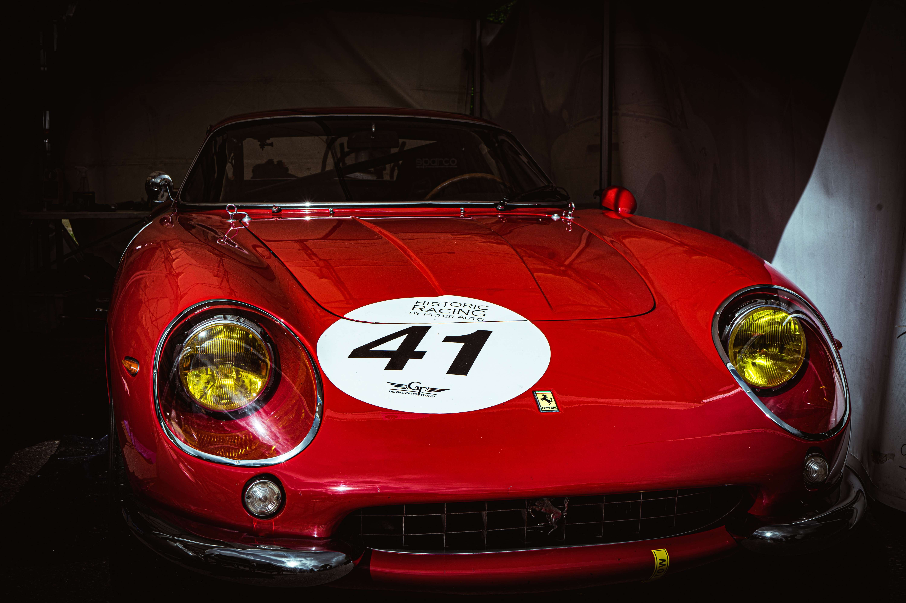

Enzo Ferrari fue un apasionado piloto de carreras. Aquí lo vemos compitiendo en una carrera automovilística.
Disfruta de este documental sobre la vida y logros de Enzo Ferrari.

Enzo Ferrari posando junto a uno de sus emblemáticos autos.

Uno de los modelos más exclusivos de Ferrari, LaFerrari, con un diseño impresionante y un rendimiento excepcional.

El Ferrari 250 GTO, considerado uno de los automóviles más valiosos y codiciados del mundo.
Prueba de manejo de un Ferrari en una pista de carreras.